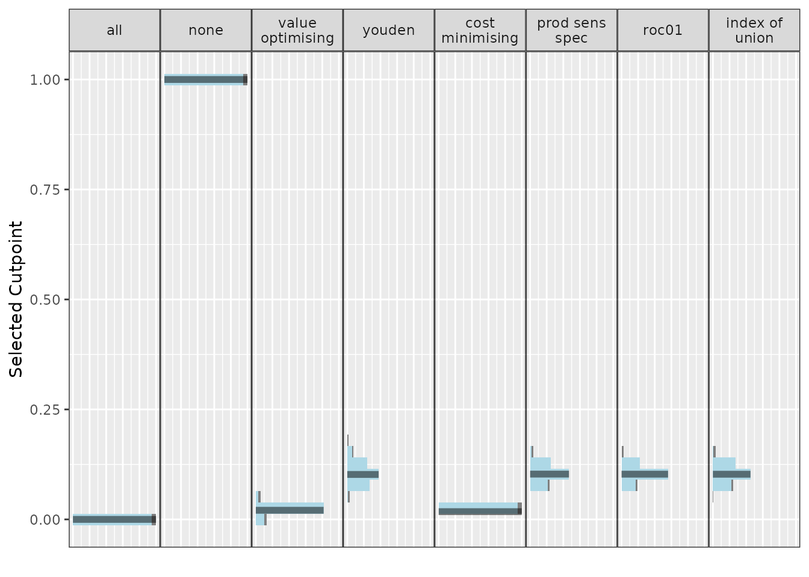
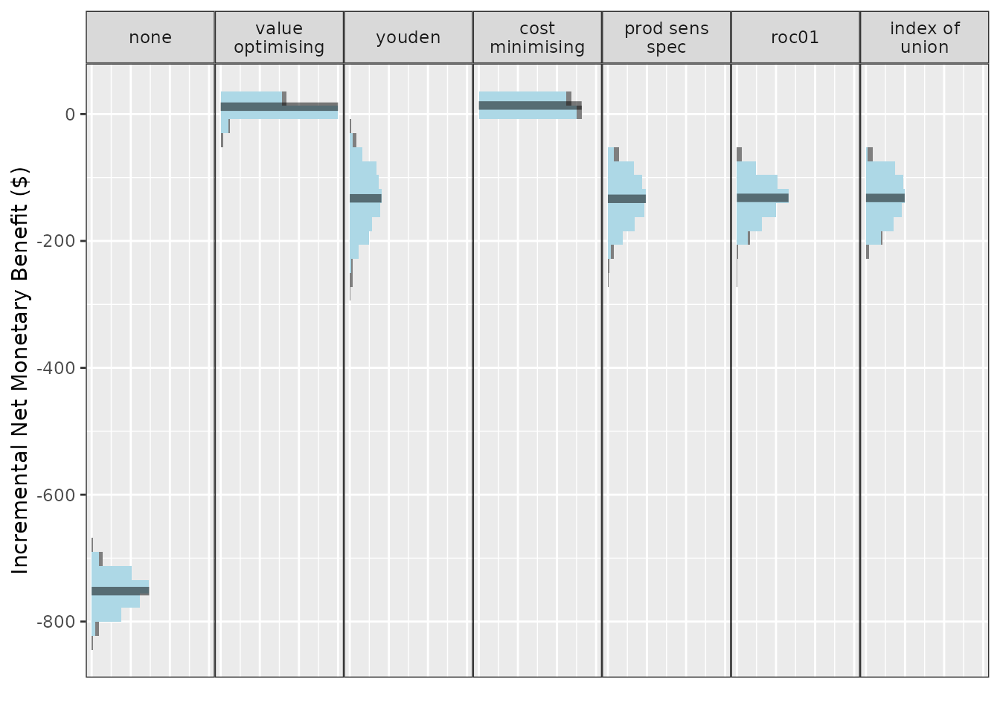
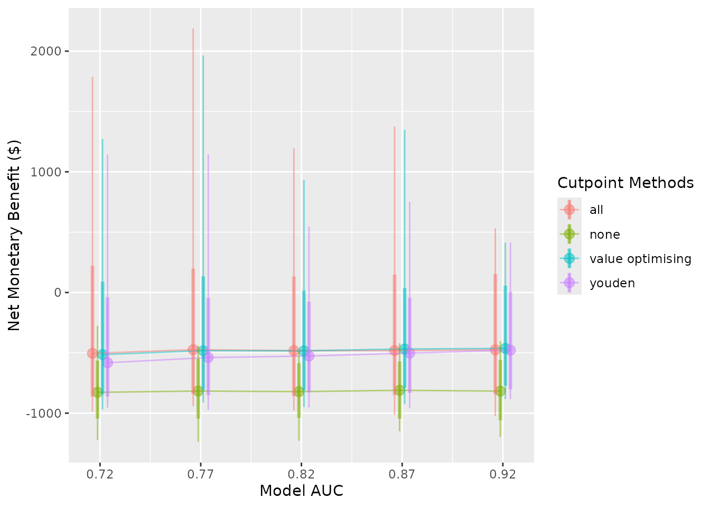
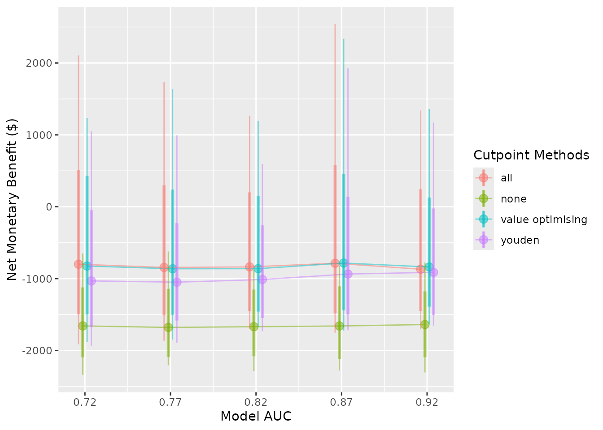
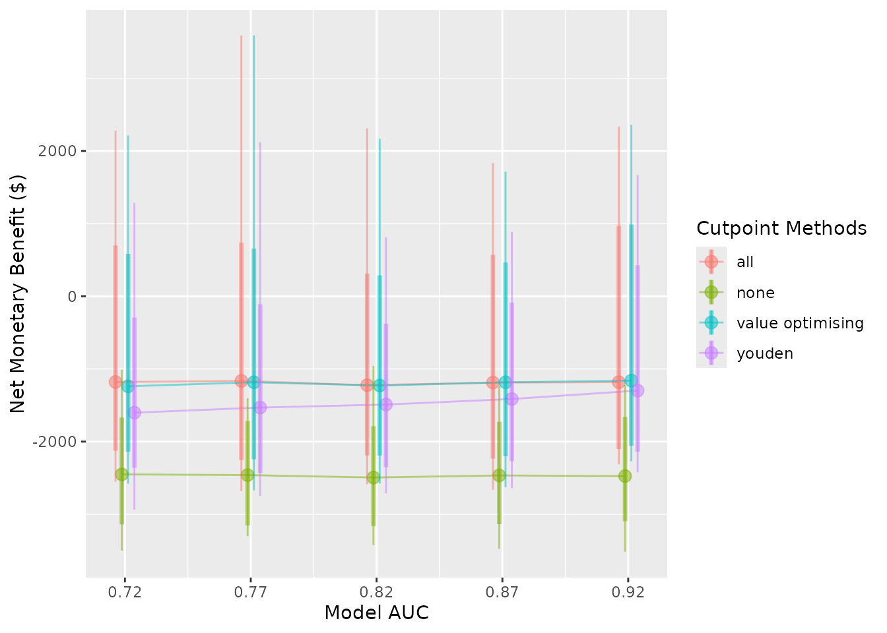
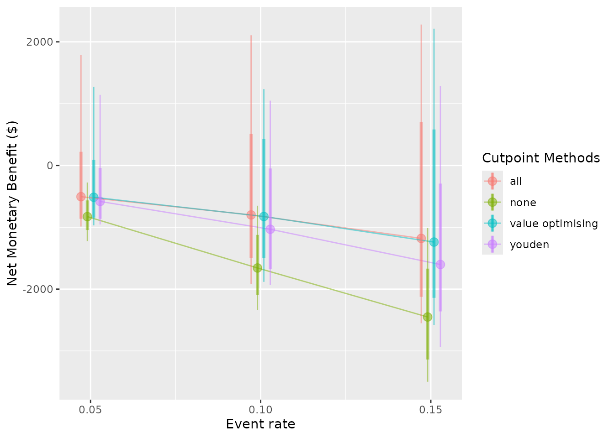

Detailed example
Economic analyses often combine information from a variety of sources, including randomised controlled trials, costing studies, and local data. An advantage of simulation is that it can estimate the utility of a proposed intervention prior to implementation.
In this example, we simulate the decision process for an analyst at a hospital with a high rate of pressure injuries (or bedsores), also known as pressure ulcers. Pressure ulcers are considered significant adverse events for patients, often leading to additional discomfort, prolonged length of hospital stay, and increased costs. The hospital currently uses pressure ulcer prevention interventions routinely, but our analyst is examining whether to implement a new clinical prediction model to identify patients who may not benefit from existing interventions and provide decision support to reduce non-beneficial care.
Let’s begin by generating some realistic costs, health utilities, and probabilities. Keep in mind, we are trying to avoid a negative event, so the net monetary benefit of every strategy in this scenario is going to be negative. In this case, negative values will represent costs, we aim to maximise these values (reduce costs). We are also interested in improving patient quality of life, so we will incorporate quality-adjusted life years (QALYs). To turn this into a net monetary benefit calculation, we multiply our QALY change by a willingness-to-pay threshold (WTP), and add this gain or loss to our true positive and false negative estimates to signify the impact on the patient. We can begin building our model using values from the literature.
Model inputs:
- Mean incremental cost per pressure injury: $9,324 (SE 814), adapted from a study of Australian public hospitals and updated to 2021 AUD (Nguyen et al. 2015)
- Per-patient cost of pressure ulcer prevention intervention (PUP): $161 (SE 49), taken from a 2017 study and updated to 2021 AUD (Whitty et al. 2017)
- Health utility decrement of a pressure ulcer: 0.23 (Padula et al. 2019) with distribution inputs derived using (White and Blythe 2023)
- The hazard ratio of pressure ulcers with the intervention compared to non-intervention: 0.58 (log hazard ratio SE 0.43) (Chaboyer et al. 2016)
- AUC: 0.82 (Cichosz et al. 2019)
- Hypothetical hospital pressure injury incidence/event rate: 0.1 (SE 0.02)
With these inputs, we can populate our confusion matrix (2 \times 2 table), which helps us understand the outcomes resulting from correct and incorrect predictions.
Model inputs
library(predictNMB)
library(parallel)First, we need to create our NMB sampler function using
get_nmb_sampler(), which provides data for our simulation.
In this case, the intervention is associated with a hazard ratio of 0.58
for pressure ulcers under intervention conditions compared to standard
care. We can use a probability-weighted cost saving for successful
prevention, at $9324*(0.58) = an improvement of around $5048. After
including $161 in intervention costs, the net benefit is around $4888
for a successfully prevented pressure ulcer. We also want to know how
this impacts the patient, so we include a utility loss (lost QALYs) of
0.23 as a result of getting a pressure ulcer.
The AUC for our hypothetical model is 0.82, which represents the proportion of random positive patients that received a higher probability of an injury than random negative patients (and vice versa). A useful property of the AUC is that it is the same no matter what probability threshold we use. In our case, an AUC of 0.82 means that the model will assign higher probabilities of a pressure ulcer to around 82% of patients who go on to develop an ulcer compared to patients that don’t.
fx_nmb <- get_nmb_sampler(
outcome_cost = 9324,
wtp = 28033,
qalys_lost = 0.23,
high_risk_group_treatment_effect = 0.58,
high_risk_group_treatment_cost = 161
)
fx_nmb()
#> TP FP
#> -6785.068 -161.000
#> TN FN
#> 0.000 -15771.590
#> qalys_lost wtp
#> 0.230 28033.000
#> outcome_cost high_risk_group_treatment_effect
#> 9324.000 0.580
#> high_risk_group_treatment_cost low_risk_group_treatment_effect
#> 161.000 0.000
#> low_risk_group_treatment_cost
#> 0.000For a first pass, we want to see how our current values affect the estimated outcomes of model implementation. We will just use our best guesses for now, but for a more rigorous simulation, we will want to use Monte Carlo methods to sample from input distributions.
nmb_simulation <- do_nmb_sim(
# Evaluating a theoretical cohort of 1,000 patients
sample_size = 1000,
# The larger the number of simulations, the longer it takes to run, but the
# more reliable the results
n_sims = 500,
# Number of times the NMB is evaluated under each cutpoint
n_valid = 10000,
# The AUC of our proposed model
sim_auc = 0.82,
# The incidence of pressure ulcers at our hypothetical hospital
event_rate = 0.1,
# As a first pass, we will just use our confusion matrix vector above for
# training and evaluation
fx_nmb_training = fx_nmb,
fx_nmb_evaluation = fx_nmb
)
nmb_simulation
#> predictNMB object
#>
#> Training data sample size: 1000
#> Minimum number of events in training sample: 100
#> Evaluation data sample size: 10000
#> Number of simulations: 500
#> Simulated AUC: 0.82
#> Simulated event rate: 0.1
# Get the median incremental NMB for each threshold selection method
summary(nmb_simulation)
#> # A tibble: 8 × 3
#> method median `95% CI`
#> <chr> <dbl> <chr>
#> 1 all -822. -861.2 to -788.3
#> 2 cost minimising -808. -849.1 to -772.2
#> 3 index of union -955. -1045 to -882.9
#> 4 none -1574 -1667.1 to -1493.6
#> 5 prod sens spec -955. -1058.3 to -874.2
#> 6 roc01 -957. -1038.7 to -890.9
#> 7 value optimising -812. -862.7 to -773.5
#> 8 youden -954. -1069.1 to -859
# Demonstrates the range of selected cutpoints under each method
autoplot(nmb_simulation, what = "cutpoints") + theme_sim()
# Compares the incremental benefit of each alternate strategy to our
# current practice (treat all)
autoplot(nmb_simulation, what = "inb", inb_ref_col = "all") + theme_sim()
Our first pass shows treating none is likely to be an undesirable option, outperformed by every other method. If we set treat none as the reference strategy, it would have associated costs and QALYs of 0. Treat all looks like a pretty good choice, so we could consider making the intervention standard practice. The best option from an NMB perspective looks to be our value optimising or the cost minimising method. The first plot shows that this is actually a lower threshold than the Youden index and other equivalents, which means that we can be a bit less strict in deciding who gets the intervention. So our intervention might be worth using even for some lower-risk patients.
Results from the ROC-based methods like the Youden index and index of
union are also quite uncertain, so we may not want to use them for these
input parameters. However, the utility of these models and the threshold
selection methods based on the ROC might improve as they get more
accurate, or as the event rate increases; what we really want to know is
how robust our results are to changes in the input parameters. This is
the purpose of screen_simulation_inputs(). We can not only
simulate from a distribution for our cost inputs, but we can also pass a
vector to the AUC and incidence arguments to understand how these impact
our findings.
First, let’s specify our sampler function for the confusion matrix.
We can replace our inputs with single samples from distributions that
represent our data. If you just use a regular distribution sample, for
example, with rnorm(), it will only evaluate this function
once. To ensure we are resampling each distribution for each simulation
run, we need to begin with a function() and then the sample
value. This propagates the uncertainty of these distributions into the
NMB values in the many simulations that we run.
fx_nmb_sampler <- get_nmb_sampler(
outcome_cost = function() rnorm(n = 1, mean = 9324, sd = 814),
wtp = 28033,
qalys_lost = function() (rbeta(n = 1, shape1 = 25.41, shape2 = 4.52) - rbeta(n = 1, shape1 = 67.34, shape2 = 45.14)),
high_risk_group_treatment_effect = function() exp(rnorm(n = 1, mean = log(0.58), sd = 0.43)),
high_risk_group_treatment_cost = function() rnorm(n = 1, mean = 161, sd = 49)
)
fx_nmb_sampler()
#> TP FP
#> -3.758125e+03 -2.172722e+02
#> TN FN
#> 0.000000e+00 -1.461388e+04
#> qalys_lost wtp
#> 2.293553e-01 2.803300e+04
#> outcome_cost high_risk_group_treatment_effect
#> 8.184365e+03 7.577062e-01
#> high_risk_group_treatment_cost low_risk_group_treatment_effect
#> 2.172722e+02 0.000000e+00
#> low_risk_group_treatment_cost
#> 0.000000e+00
fx_nmb_sampler()
#> TP FP
#> -7.432796e+03 -1.338687e+02
#> TN FN
#> 0.000000e+00 -1.500634e+04
#> qalys_lost wtp
#> 2.556022e-01 2.803300e+04
#> outcome_cost high_risk_group_treatment_effect
#> 7.841040e+03 5.136103e-01
#> high_risk_group_treatment_cost low_risk_group_treatment_effect
#> 1.338687e+02 0.000000e+00
#> low_risk_group_treatment_cost
#> 0.000000e+00
fx_nmb_sampler()
#> TP FP
#> -1.512845e+04 -1.354214e+02
#> TN FN
#> 0.000000e+00 -2.026976e+04
#> qalys_lost wtp
#> 3.721960e-01 2.803300e+04
#> outcome_cost high_risk_group_treatment_effect
#> 9.835991e+03 2.603256e-01
#> high_risk_group_treatment_cost low_risk_group_treatment_effect
#> 1.354214e+02 0.000000e+00
#> low_risk_group_treatment_cost
#> 0.000000e+00The sampler function shows that we can expect some significant variation, especially due to the probability that our intervention is effective. It’s always possible that an intervention could lead to worse patient outcomes. In our case, some true positives could be worse than false negatives!
We should also check whether changing the other inputs can lead to
different results. Perhaps the authors of the clinical prediction model
reported a misleading AUC and when we implement the model it turns out
to be lower, or perhaps our pressure ulcer rate in some wards is
actually quite different to the average incidence at the hospital. By
replacing our sim_auc and event_rate arguments
with vectors, we can run simulations for each possible combination we
are interested in.
In the snippet below, we will compare the treat-all strategy to total disinvestment from the intervention (“none”) and to a couple of alternatives, model-guided strategies, using the “value_optimising” and “youden” thresholds.
We can also do this in parallel to speed things up.
cl <- makeCluster(2)
sim_pup_screen <- screen_simulation_inputs(
n_sims = 500,
n_valid = 10000,
sim_auc = seq(0.72, 0.92, 0.05),
event_rate = c(0.05, 0.1, 0.15),
cutpoint_methods = c("all", "none", "value_optimising", "youden"),
fx_nmb_training = fx_nmb,
fx_nmb_evaluation = fx_nmb_sampler,
cl = cl
)
stopCluster(cl)
summary(sim_pup_screen)
#> # A tibble: 15 × 10
#> sim_auc event_rate all_median `all_95% CI` none_median `none_95% CI`
#> <dbl> <dbl> <dbl> <chr> <dbl> <chr>
#> 1 0.72 0.05 -505. -861.2 to 222.4 -827. -1043.3 to -557.5
#> 2 0.72 0.1 -800. -1495.3 to 524.8 -1658. -2091.9 to -1118.5
#> 3 0.72 0.15 -1180. -2121 to 706.4 -2451. -3121 to -1666
#> 4 0.77 0.05 -474. -839.9 to 199.1 -817. -1043.5 to -548.7
#> 5 0.77 0.1 -845. -1505.3 to 302.7 -1679. -2079.5 to -1128.9
#> 6 0.77 0.15 -1165. -2250.4 to 748.4 -2461. -3124.7 to -1708.5
#> 7 0.82 0.05 -482. -858.2 to 136.2 -822. -1039.4 to -582.6
#> 8 0.82 0.1 -837. -1453.4 to 212.3 -1669. -2075.1 to -1140.5
#> 9 0.82 0.15 -1223. -2188.4 to 313.5 -2494. -3159.1 to -1787.5
#> 10 0.87 0.05 -481. -847.7 to 152.2 -810. -1042.9 to -567.9
#> 11 0.87 0.1 -786. -1479.9 to 610.9 -1659. -2113.6 to -1098.9
#> 12 0.87 0.15 -1188 -2233.3 to 569.5 -2465. -3126.5 to -1724.1
#> 13 0.92 0.05 -475 -842.7 to 153.9 -817. -1057.4 to -554.1
#> 14 0.92 0.1 -869. -1450.6 to 253.7 -1639. -2088.7 to -1159.6
#> 15 0.92 0.15 -1182. -2097.6 to 993.2 -2475. -3085.3 to -1654.6
#> # ℹ 4 more variables: `value optimising_median` <dbl>,
#> # `value optimising_95% CI` <chr>, youden_median <dbl>, `youden_95% CI` <chr>As our model accuracy increases and event rate decreases, treatment decisions based on the model, like the Youden index, begin to look better. There are reasonable gains from using the prediction model, even though there is some uncertainty. If the event rates 0.05, 0.10 and 0.15 corresponded to different wards of the hospital, our simulation could represent the estimated effectiveness of different strategies in each setting.
We can also represent these results visually.
autoplot(
sim_pup_screen,
x_axis_var = "sim_auc",
constants = c(event_rate = 0.05),
dodge_width = 0.01
)
#>
#>
#> Varying simulation inputs, other than sim_auc, are being held constant:
#> event_rate: 0.05
autoplot(
sim_pup_screen,
x_axis_var = "sim_auc",
constants = c(event_rate = 0.10),
dodge_width = 0.01
)
#>
#>
#> Varying simulation inputs, other than sim_auc, are being held constant:
#> event_rate: 0.1
autoplot(
sim_pup_screen,
x_axis_var = "sim_auc",
constants = c(event_rate = 0.15),
dodge_width = 0.01
)
#>
#>
#> Varying simulation inputs, other than sim_auc, are being held constant:
#> event_rate: 0.15
autoplot(
sim_pup_screen,
x_axis_var = "event_rate",
dodge_width = 0.0075
)
#>
#>
#> Varying simulation inputs, other than event_rate, are being held constant:
#> sim_auc: 0.72
The nice thing about our value-optimising function is that it tends to follow the best threshold, regardless of AUC or event rate. In this case, it tends to dynamically follow the best treatment decision as it moves across, which is why the value optimising strategy tends to overlap with the best alternative in the plots. We can also see that the Youden index begins to look better at higher accuracy and higher incidence rates, but predicting what patients will get a pressure ulcer is challenging.
Ultimately at our given AUC and event rate, the prediction model might be worth using. In the original study, Whitty and colleagues found that the prevention program was not cost-effective; however, by combining it with a prediction model, it could be worth implementing, especially in wards where the event might be rarer. (Whitty et al. 2017).